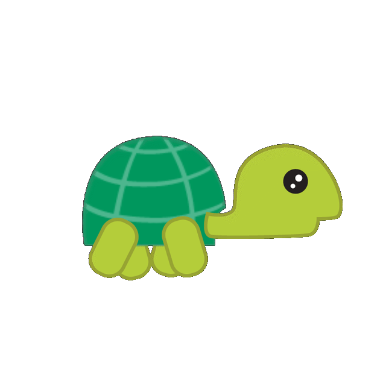

<!DOCTYPE html>
<html lang="en">

<head>
  <meta charset="UTF-8">
  <meta name="viewport" content="width=device-width,initial-scale=1.0">
  <title></title>
  <link rel="stylesheet" href="../../base.css">
</head>


<body>
  <!-- Internal CSS -->
  <style>
    .turtle {
      position: relative;
      --x: 0; /* CSS custom properties (syntax: --customPropertName: value;) (similar concept to JS variables) */
      --y: 0;
      --rotateX: 0;
      --rotateY: 0;
      transform: translateX(var(--x)) translateY(var(--y)) rotateY(var(--rotateX)) rotate(var(--rotateY)); /* Call on CSS custom properties with var(--customPropertyName) */
    }
  </style>
  <!-- /internalCSS -->

  <!--  -->

  

  <!-- Maybe add on a random fly appearing that the turtle has to eat -->

  <!-- Javascript -->
  <script>
    const turtle = document.querySelector('img.turtle');
    let x = 0;
    let y = 0;
    const speed = 10;
    let flipped = false;
    let rotate = 0;
    function handleKeyDown(event) {
      // If it's not an arrow key, don't do anything
      if(!event.key.includes('Arrow')) { return; }

      // If it's an arrow key, change X and Y variables to move turtle
      switch (event.key) {
        case 'ArrowUp':
          y = y - 1;
          rotate = -90;
          break;
        case 'ArrowDown':
          y = y + 1;
          rotate = 90;
          break;
        case 'ArrowLeft':
          x = x - 1;
          flipped = true;
          rotate = 0;
          break;  
        case 'ArrowRight':
          x = x + 1;
          flipped = false;
          rotate = 0;
          break;
        default:
          console.log('That is not a valid move!');
          break;
      }
      //turtle.style['--x'] = `${x}px`; -- only works with "real" CSS properties (not custom ones)
      //turtle.style['--y'] = `${y}px`;

      turtle.setAttribute('style', `
        --rotateX: ${flipped ? '180deg' : '0'};
        --x: ${x * speed}px;
        --y: ${y * speed}px;
        --rotateY: ${rotate}deg;
      `);
    }

    window.addEventListener('keydown', handleKeyDown);
  </script>
  <!-- /javascript -->
</body>

</html>
